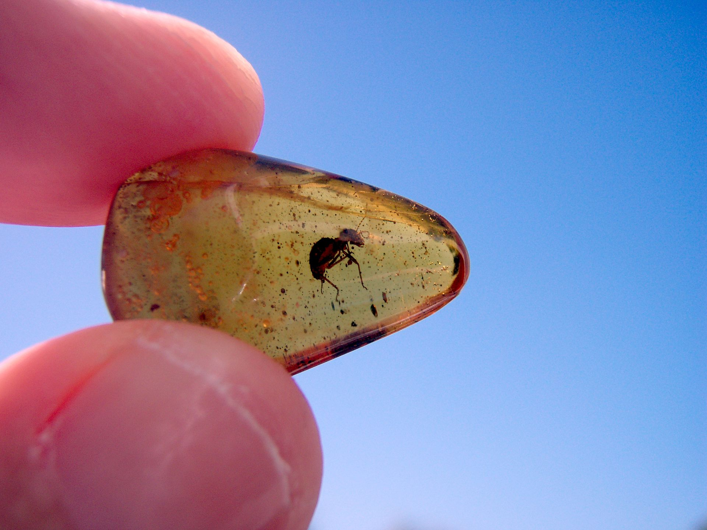

希望你宠辱不惊 在岁月里安然 不需大悲大喜 你只需静静地 等风来
Jul 23“他不懂得在人生的旅途上，非得越过一大片干旱贫瘠、地形险恶的荒野，才能跨入活生生的现实世界。”
——《人生的枷锁》，毛姆。
这么多年，这么多人经过我的生活，可是为什么偏偏是你，看起来好像最应该是过客的你，在我心中占据了这么重的地位。 ——《one day》
Jul 21

岁月深埋在土中便成琥珀。
Jul 20你可以逃避这世上的痛苦，这是你的自由，也与你的天性相符。但或许，准确地说，你唯一能逃避的，只是这逃避本身。（卡夫卡）
Jul 19
Jul 18
Jul 10